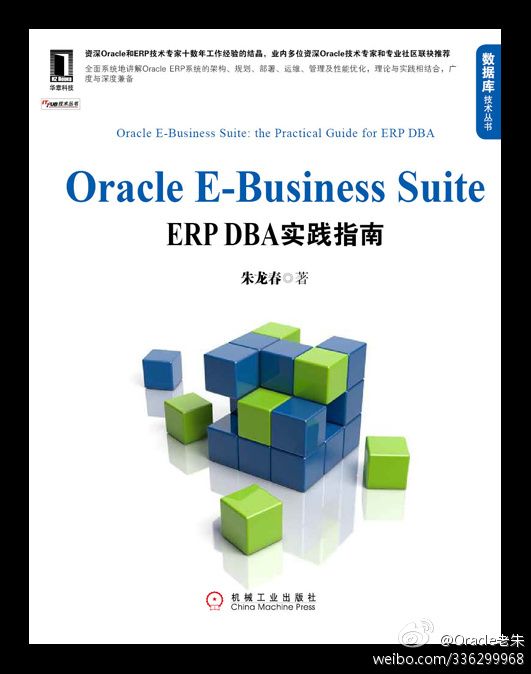

实践出的书籍，推荐。//@Oracle老朱:所以本书推翻了初稿中大量的所谓的“高级技术”内容，以“最基础的知识”为引子，力求使读者不仅能掌握基础知识，更能拓宽思路，从而一步一步走向架构师的职业发展道路
@朱龙春_小四科技:
#Oracle E-Business Suite: ERP DBA实践指南# 漫漫人生路，笔者总结自己十几年的ERP 从业经历，越发感悟到：“越是最基础的东西，往往就是最精髓的”，所谓的“高级技术”只不过是基础知识的衍生而已。当然，技能是ERP DBA 存在的价值，但思路可以决定一个人的未来。
- 